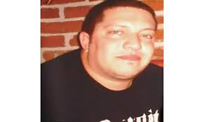

egg
sal
classic sal
we don't deserve
sal

sal wasn't able to choose between
mo bamba
and
sicko mode
, making him tonight's biggest loser
egg
This is my game. Use the "wasd" keys to move.
This text is displayed if your browser does not support HTML5 Canvas.